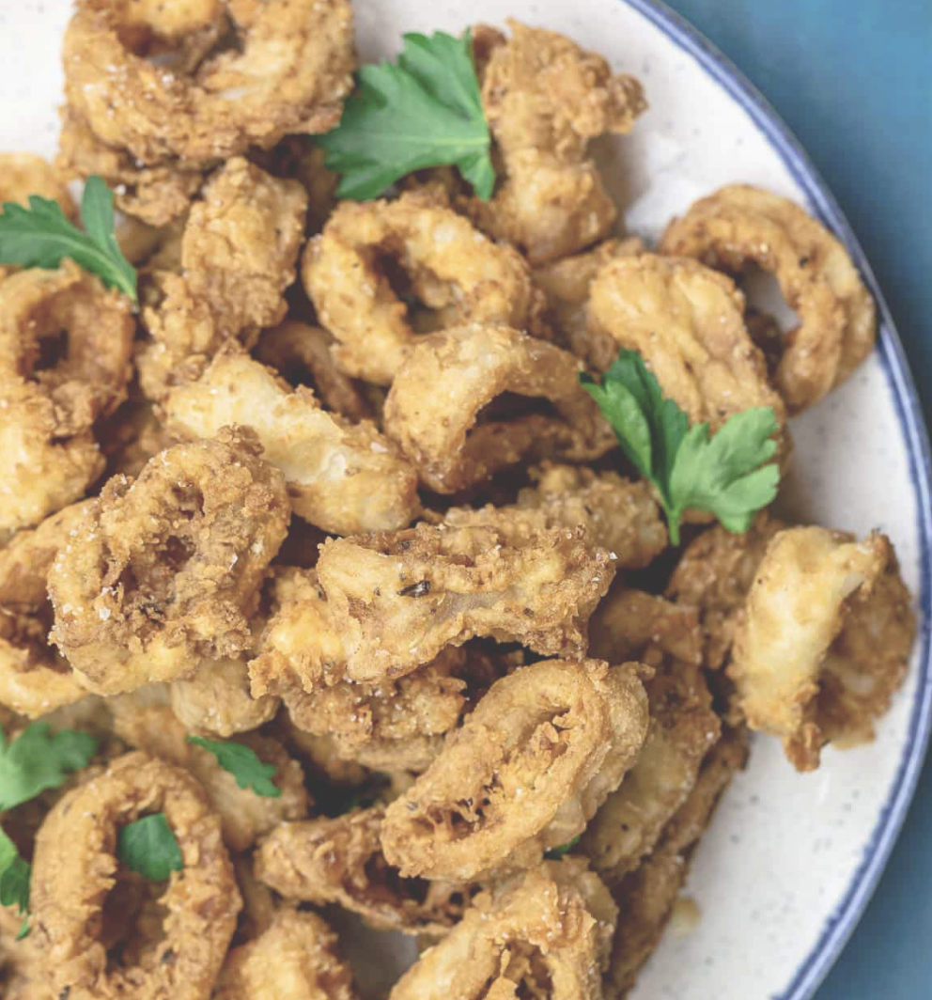

Calamari Recipe

Description
Very tasty fried calamari. Goes great with italian dishes
Ingredients
- 1lb. Calamari Rings
- 1-1/2 cup all-purpose flour
- 2 teaspoobs garlic powder
- 2 teaspoons dried parsley flakes
- Lemon Wedges
- 2 cups cooking oil
- Cooking procedure
Steps
- Combine flour,salt,garlic powder, and parsley flakes
- Heat cooking oil in a wok or cooking pot
- Drain milk of the calamri. Dredge calamri rings on flour mixture
- Deep fry the coated calamari rings in hot oil for 2 minutes
- Strain the calamari from cooking pot using a skimmer
- Transfer the fried calamari
- Serve with lemon wedges
- Serve and Enjoy!